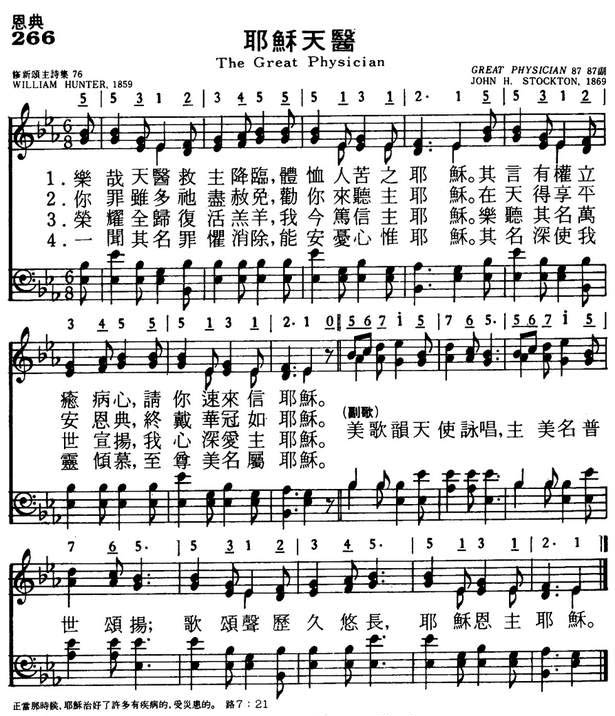

|
|
|
|
1 The great Physician now is near, Refrain: 2 Your many sins are all forgiven, 3 All glory to the risen Lamb! 4 His name dispels my guilt and fear, |
266耶稣天医
1.乐哉天医 救主降临
体恤人苦之耶稣 其言有权 立愈病心 请你速来就耶稣 副歌: 美歌韵天使咏唱 主美名普世颂扬 歌颂声历久悠长 耶稣恩主耶稣 2.你罪虽多 祂尽饶恕 劝你来听主耶稣 在天得享平安恩典 终戴华冠如耶稣 3.荣耀全归 复活羔羊 我今笃信主耶稣 乐听其名万世宣扬 我心深 爱主耶稣 4.一闻其名 罪惧皆消 能安忧心惟耶稣 其名深使我灵倾慕 至尊美名属耶稣 |
|
https://www.mred365.cn/szxg/7269.html  |
|
|
|
|

TABIBU MKUU | THE GREAT PHYSICIAN | SWAHILI HYMN with LYRICS | NZK 111 https://www.youtube.com/watch?v=3sGXL8vkXnA -
SB476 樂哉天醫救主惠臨 The great physician (鋼琴Piano) https://www.youtube.com/watch?v=QKN6w9EOev0 https://youtu.be/Hk3AxloR-_M
LX1862
The Great Physician
266耶稣天医
| Text: | The Great Physician |
| Author: | William Hunter |
| Tune: | GREAT PHYSICIAN |
| Composer: | John H. Stockton |
| Short Name: | William Hunter |
| Full Name: | Hunter, William, 1811-1877 |
| Birth Year: | 1811 |
| Death Year: | 1877 |
Hunter, William, D.D, son of John Hunter, was born near Ballymoney, County Antrim, Ireland, May 26, 1811. He removed to America in 1817, and entered Madison College in 1830. For some time he edited the Conference Journal, and the Christian Advocate. In 1855 he was appointed Professor of Hebrew in Alleghany College: and subsequently Minister of the Methodist Episcopal Church, at Alliance, Stark Country, Ohio. He died in 1877. He edited Minstrel of Zion, 1845; Select Melodies, 1851; and Songs of Devotion, 1859. His hymns, over 125 in all, appeared in these works. Some of these have been translated into various Indian languages. The best known are :—
Tune Information
| Title: | [The great Physician now is near] (Stockton) |
| Composer: | John H. Stockton (1869) |
| Meter: | 8.7.8.7 with refrain |
| Incipit: | 55312 34555 13121 |
| Key: | E♭ Major |
| Copyright: | Public Domain |
| Short Name: | John H. Stockton |
| Full Name: | Stockton, John H., 1813-1877 |
| Birth Year: | 1813 |
| Death Year: | 1877 |
Stockton, John Hart, a Methodist minister, was born in 1813, and died in 1877. He was a member of the New Jersey Annual Conference of the Methodist Episcopal Church, and the successive pastoral charges that he filled as a member of that Conference are found in the Conference Journal. He was not only a preacher, but a musician and composer of tunes, as well as hymn writer. He published two gospel song books: Salvation Melodies, 1874, and Precious Songs, 1875.
Hymn Writers of the Church by Charles Nutter, 1911
===============
Stockton, John Hart, b. April 19, 1813, and d. March 25, 1877, was the author of "Come, every soul by sin oppressed" (Invitation), in I.D. Sankey's Sacred Songs and Solos, 1878, and of "The Cross, the Cross, the blood¬stained Cross" (Good Friday) in the same collection.
--John Julian, Dictionary of Hymnology, Appendix, Part II (1907)
耶穌的神蹟[編輯]
|
|
此條目內容疑欠準確，有待查證。 (2014年1月4日) |
| 耶穌 |
|---|
 |
|
耶穌的神蹟在《新約聖經》的《四福音書》中有許多記載，耶穌所行的神蹟可以分為醫病、驅魔、支配自然界、三次從死亡復活的實例，以及其他種類。對於許多基督徒而言，這些神蹟是歷史上確實發生過的事件，不過自由派基督徒可能認為這些僅僅是用作比喻的故事。聖經批判學者通常承認，考慮到這是一個神學或哲學問題，經驗主義方法無法確定是否是歷史上一個真正的神蹟。伊斯蘭教學者也相信大部分醫病和使人復活的神蹟。
神蹟的類型[編輯]
醫病[編輯]
新約中記載的最多的一類神蹟是醫治疾病和殘疾。四福音中的每段情節的記載非常不同，有時耶穌的醫治只用了幾句話，有時用按手（laying on of hands）, 有時也使用一些材料（例如唾液或泥漿）來完成儀式。通常，這些神蹟都記載在對觀福音中，而未見於約翰福音。
- 麻風：對觀福音書記述在耶穌早期的職事中，治癒了一個麻風病人
- 長期血漏：對觀福音書記述耶穌前往睚魯的家醫治他將要去世的女兒時（見下文「征服死亡」），有一個婦女俯伏在耶穌腳前，她已經患了12 年的血漏症，這時她觸摸耶穌的衣服繸子（馬太福音 9章20節，14章36節），她的疾病就立即治癒了。耶穌轉身過來，於是那位婦女俯伏在耶穌腳前，說「女兒，你的信心拯救了你，平平安安地走吧」。 血漏有時解釋為月經過多，但是大多數學者認為血漏持續時間長達12年，似乎更有可能是指血友病。
- 「枯乾的手」：對觀福音書記述耶穌在安息日進入一個猶太會堂，在那裡發現有一個人手枯乾了，
- 失明：對觀福音書記載耶穌遇到一個乞丐（馬可福音記載他的名字是巴底買）
- 癱瘓：對觀福音書記載人們用臥榻抬著一個癱子來到耶穌那裡，耶穌告訴他，他的罪得到了赦免，並且告訴他，「起來，拿你的臥榻回家去吧」，那癱子就起來，拿著他的臥榻走回去了。根據對觀福音書記載，耶穌赦免癱子的罪這件事，激怒了法利賽人，而根據約翰福音記載，這件事激怒了全體群眾。耶穌憤怒地答覆他們：「說你的罪赦了，或說，你起來行走，哪一樣更容易？」對觀福音書記載，這件事發生在迦百農
驅魔[編輯]
根據對觀福音，耶穌曾經多次為被鬼附者（demonic possession）進行驅魔。但是這些事件沒有在《約翰福音》中提及。
征服死亡[編輯]
- 睚魯的女兒 ：一個猶太會堂的主要贊助人睚魯，請求耶穌醫治他垂死的女兒，但是當耶穌還在途中時，有人告訴睚魯，他的女兒已經去世，耶穌卻說她只是睡了，向她說了一句亞蘭文「大利大古米」（意為「閨女，我吩咐你起來」），就「叫醒」了她。
- 寡婦的獨生子：拿因一位年輕人去世，他是一位寡婦的獨生子，他的棺材正運到拿因城外埋葬。耶穌對這位傷心欲絕的母親產生了憐憫，告訴她不要哭，耶穌上前按住棺材的槓，吩咐棺材裡面的人起來，於是死人就坐起來，並且說話。
- 拉撒路：耶穌的好朋友拉撒路已經死去4天，當耶穌命令他起來時，他就復活了。
- 耶穌本人從死亡中復活。
在所有對觀福音中（除去約翰福音），都記載了睚魯女兒復活的事例；只有路加福音記載了寡婦之子復活的事例；而只有約翰福音記載了拉撒路復活的事例。有些聖經學者和解經家認為拉撒路的事例和拿因寡婦獨生子的事例其實是同一個事例，來源於馬可福音中年輕人復活的事例。
超自然的知識[編輯]
耶穌用超自然手段了解事物的能力也可以歸類為神蹟。這可以用來解釋為何耶穌對拿但業說，「腓力還沒有招呼你，你在無花果樹底下，我就看見你了」。拿但業回答說，「拉比，你是神的兒子，你是以色列的王」。[1]
解釋[編輯]
基督徒的解釋[編輯]
許多基督徒認為，這些神蹟是歷史上確實發生過的事件，不過自由派基督徒認為這些可能僅僅是用作比喻的故事。
許多基督徒承認驅魔真正地驅逐了真正的魔鬼：羅馬天主教還有一套詳細的驅魔步驟，多數地方的教堂附近都有驅魔「專家」；英國聖公會每個教區都有人負責驅魔；羅馬天主教、東正教和聖公會認為最後晚餐中聖餐變體是一個神奇事件，要求按照字面理解耶穌所說的話。大部分新教徒不同意上述儀式的意義。
儘管如此，大多數基督徒相信耶穌復活是事實，並且將擁有對耶穌復活的信仰作為成為一名基督徒的標誌。
參考文獻[編輯]
引用[編輯]
"THE GREAT PHYSICIAN"
"They that be whole need not a physician, but they that are sick…" (Matt.
9.12)
INTRO.:
A song which identifies Jesus as a spiritual physician who came to heal mankind of sin is "The Great Physician" (#338 in Hymns for Worship Revised, and #615 in Sacred Selections for the Church). The text was written by William Hunter, who was born son of John Hunter near Ballymena in County Antrim, Ireland, on May 26, 1811. In 1817, when he was six years old, his family emigrated to America and settled in York, PA. Entering Madison College at Uniontown, PA, in 1830 and graduating in 1833, he became a Methodist minister and served the Pittsburgh Conference. From 1836 to 1840 he served as editor of the Pittsburg Conference Journal, and after it became the Christian Advocate he served twice more as editor, from 1844 to 1852, and again from 1872 to 1876. In addition, he was a presiding elder in the Virginia and East Ohio Conferences, and in 1855, was appointed professor of Hebrew and Biblical Literature at Allegheny College, remaining for fifteen years in this position.
Also, Hunter produced more than 125 hymns which were published in three collections. They were Select Sacred Melodies in 1838, The Minstrel of Zion in 1845, and Songs of Devotion in 1859, the last-mentioned of which first contained this song, titled "Christ The Physician," in seven stanzas. Apparently, the stanzas were based on a refrain by Richard Kempenfelt from 1777 and resulted from a railroad accident in which there were a large number of casualties but several medical men who were on the train were instrumental in saving the lives of many who would otherwise have been among the fatalities. Other Hunter hymns that have appeared in some of our books include "The Hallowed Spot," "I’m Going Home," and "Rest for the Weary." The tune (Great Physician or Sympathy) was composed for this text by John Hart Stockton (1813-1877). Its first appearance was apparently in Joyful Songs Nos. 1, 2, and 3 Combined, published at Philadelphia, PA, by the Methodist Episcopal Book Room in 1869.
Stockton later published the song in his own 1874 book Salvation Melodies No. 1 for the Friends of Jesus. Other Stockton songs that have appeared in our books include "Only Trust Him" and the melody to "Glory to His Name." Early printings of "The Great Physician" gave the notation "arr. by J. H. Stockton; Harm. Prof. Garland." In 1875, the song was included in the famous Gospel Hymns and Sacred Songs, compiled by Ira David Sankey and Philip Paul Bliss. Through this channel, it became widely known. Because of his experience as a hymn writer and songbook editor, Hunter, who spent his latter days as minister of the Methodist Episcopal Church at Alliance, in Stark County, OH, was one of the twelve appointed by the General Conference of 1876 to revise the Methodist Hymnal, but he died at Cleveland, OH, on Oct. 18, 1877, before it appeared in 1878 as the Hymnal of the Methodist Episcopal Church with Tunes.
Among hymnbooks published by members of the Lord’s church during the twentieth century for use in churches of Christ, "The Great Physician" has appeared in the vast majority. It was used in the 1921 Great Songs of the Church (No. 1) and the 1937 Great Songs of the Church No. 2 both edited by E. L. Jorgenson; the 1935 Christian Hymns (No. 1), the 1948 Christian Hymns No. 2, and the 1966 Christian Hymns No. 3 all edited by L. O. Sanderson; the 1963 Abiding Hymns edited by Robert C. Welch; and the 1963 Christian Hymnal edited by J. Nelson Slater. Today it may be found in the 1971 Songs of the Church, the 1990 Songs of the Church 21st C. Ed., and the 1994 Songs of Faith and Praise all edited by Alton H. Howard; the 1978/1983 (Church) Gospel Songs and Hymns edited by V. E. Howard; the 1986 Great Songs Revised edited by Forrest M. McCann; and the 1992 Praise for the Lord edited by John P. Wiegand; as well as Hymns for Worship, Sacred Selections, and the 2007 Sacred Songs of the Church edited by William D. Jeffcoat. None of our books contain more than five stanzas, and most use only three or four.
The song offers praise to Christ as our spiritual physician and encourages sinners to come to Him for healing.
I. In stanza 1 we are told that the Great Physician speaks to cheer us
"The Great Physician now is near, The sympathizing Jesus;
He speaks the drooping heart to cheer: O hear the voice of Jesus."
A. Jesus can sympathize with all our infirmities because He was tempted in all
points as we are: Heb. 4.14-16
B. This sympathy was shown in many of His miracles, and as He was about to heal
the paralytic He spoke to cheer His drooping heart: Matt. 9.2
C. Therefore, we too can be healed if we will hear the voice of Jesus: Matt.
13.14-16
II. In stanza 2 we are told that the Great Physician forgives sin
"Your many sins are all forgiven, Oh! hear the voice of Jesus;
Go on your way in peace to heaven, And wear a crown with Jesus."
A. Jesus provides forgiveness and heals the broken hearted through the gospel:
Lk. 4.18
B. Those who come to Him for forgiveness can go on their way in peace to heaven
because He gives us this hope: 1 Pet. 1.3-5
C. Thus, through Him we can look forward to wearing the crown of life with Him:
Jas. 1.12
III. In stanza 3, we are told that the Great Physician is our Savior
"All glory to the dying Lamb! I now believe in Jesus;
I love the blessed Savior’s name, I love the name of Jesus."
A. Jesus is our Savior because He is the Lamb of God who shed His blood for our
salvation: Jn. 1.29, 1 Pet. 1.18-20
B. However, in order to have the salvation that He offers, we must first
believe in Him: Jn. 8.24, Acts 16.30-31
C. And those who do receive this salvation will love His name because the very
name of Jesus indicates that He came to save us: Matt. 1.21
IV. In stanza 4, we are told that the Great Physician dispels our guilt and fear
"His name dispels my guilt and fear, No other name but Jesus;
O how my soul delights to hear The charming name of Jesus."
A. Again, Jesus removes all our spiritual diseases, including our guilt and
fear, through the gospel which He revealed: Matt. 4.23
B. We must remember that salvation is found in no other name but Jesus: Acts
4.12
C. Those whose guilt and fear have been dispelled by Him should be so thankful
that their souls will delight to hear the charming name of Jesus and make sure
that everything they do is in His name: Col. 3.17-18
V. In stanza 5 we are told that the Great Physician will take us to the bright
world above
"And when to that bright world above We rise to see our Jesus,
We’ll sing around the throne of love His name, the name of Jesus."
A. It is the desire of Jesus to provide sinful mankind with an eternal home in
the bright world above of heaven: Matt. 8.11
B. Therefore, someday, He will come again that we might rise to meet Him in the
air: 1 Thess. 4.16-17
C. After that, He will take us to stand before His throne where we shall join
with the redeemed of all ages to sing eternal praises to Him: Rev. 5.8-12
CONCL.:
The chorus continues the strain of praise to Jesus as the Healer of mankind’s
spiritual problems.
"Sweetest note in seraph song, Sweetest name on mortal tongue,
Sweetest carol ever sung, Jesus, blessed Jesus."
The two stanzas not included in any of our books are as follows:
4. "The children, too, both great and small, Who love the name of Jesus,
May now accept the gracious call To work and live for Jesus."
5. "Come, brethren, help me sing His praise, O praise the name of Jesus;
O sisters, all your voices raise, O bless the name of Jesus."
Jesus is surely worthy of our praises because we can turn to Him and find
spiritual healing from "The Great Physician."
Words: William Hunter (b. May 26, 1811; d. Oct. 18,
1877)
Music: John Hart Stockton (b. Apr. 19, 1813; d. Mar. 25,
1877)
Links:
Wordwise Hymns
The Cyber
Hymnal
Note: In the mid-nineteenth century, there was a serious railway accident. Many were killed, and many more might have died, except for timely efforts of four or five medical doctors who had been on the train. Their intervention was the inspiration for this 1859 song.
The repetitious tune (in which three of the four lines are the same) was written specifically for the text. Hymn books today commonly use CH-1, 2, 3, and 7, of the original seven stanzas. You can see the unused stanzas in the Cyber Hymnal.
Physicians are mentioned a number of times in the Word of God. In addition, the Hebrew word rapha, rendered “physician” in the Old Testament, is also translated many times with words such as “heal” and “cure” (e.g. Exod. 15:26; Lev. 14:3).
Sometimes, the reference is to physical healing. For example, King Asa of Judah is criticized for going doctors and not seeking the Lord’s help when he developed a severe disease in his feet (II Chron. 16:12).
But other times, the word is used of dealing with spiritual need (the effects of sin), or psychological distress that required healing. When his three friends provide no encouragement or comfort for him in his misery, but rather falsely accuse him of wickedness, Job calls them “forgers of lies and worthless physicians” (Job 13:4).
In the New Testament, the Greek word is iatros. It’s interesting that two long books, one of the Gospels, and the book of Acts, where written by Luke, a medical doctor who was a friend of Paul’s (the latter calls Luke “the beloved physician,” Col. 4:14).
Since the hymn is speaking of Christ of we are especially interested in the uses of the word “physician” in the gospels.
¤ As one who practised medicine, it’s not surprising that Luke is interested in one who was healed by the Lord Jesus, when no doctors could help her. And notice that Mark is a little more critical of the doctors of his day than Luke is. “A woman, having a flow of blood for twelve years, who had spent all her livelihood on physicians and could not be healed by any [“but rather grew worse,” adds Mark 5:26], came from behind and touched the border of His garment. And immediately her flow of blood stopped” (Lk. 8:43-44).
¤ When the Lord read the Scriptures and commented, in the synagogue at Nazareth, where He’d been raised in the home of Joseph and Mary, at first He was admired for His “gracious words” (Lk. 4:22). But then He outraged His audience. Jesus said, “You will surely say this proverb to Me, ‘Physician, heal yourself! Whatever we have heard done in Capernaum, do also here in Your country’” (Lk. 4:23). But He reminded them of how Israel had formerly not been receptive to God’s prophets (vs. 24-27).
¤ When the Lord Jesus was criticized by the Pharisees for eating with tax collectors and “sinners,” He responded pointedly, “Those who are well have no need of a physician, but those who are sick. I did not come to call the righteous, but sinners, to repentance (Mk. 2:17; also Matt. 9:12-13; Lk. 5:31-32).
Nowhere is Christ described as “the great Physician,” but William Hunter’s phrase has become proverbial, and is still used (legitimately, I believe) a century and a half after the song appeared. Rather than focusing on the physical miracles of Christ, He speaks of Him as One who brings sympathy and cheer to the troubled soul (CH-1), and forgiveness of sins and peace with God to the sinner (CH-2). He rejoices that through Christ we can look forward to a home in “that bright world above,” there to worship around the throne (CH-7)
CH-1) The great Physician now is near,
The sympathizing Jesus;
He speaks the drooping heart to cheer,
Oh! hear the voice of Jesus.
Sweetest note in seraph song,
Sweetest name on mortal tongue;
Sweetest carol ever sung,
Jesus, blessèd Jesus.
CH-2) Your many sins are all forgiv’n,
Oh! hear the voice of Jesus;
Go on your way in peace to heav’n,
And wear a crown with Jesus.
CH-7) And when to that bright world above,
We rise to see our Jesus,
We’ll sing around the throne of love
His name, the name of Jesus.
Questions:
1) What means does the Lord use to bring spiritual healing (salvation)
to the sinner?
2) What means does the Lord use to bring healing of soul (mind and emotions)?
Links:
Wordwise Hymns
The Cyber
Hymnal